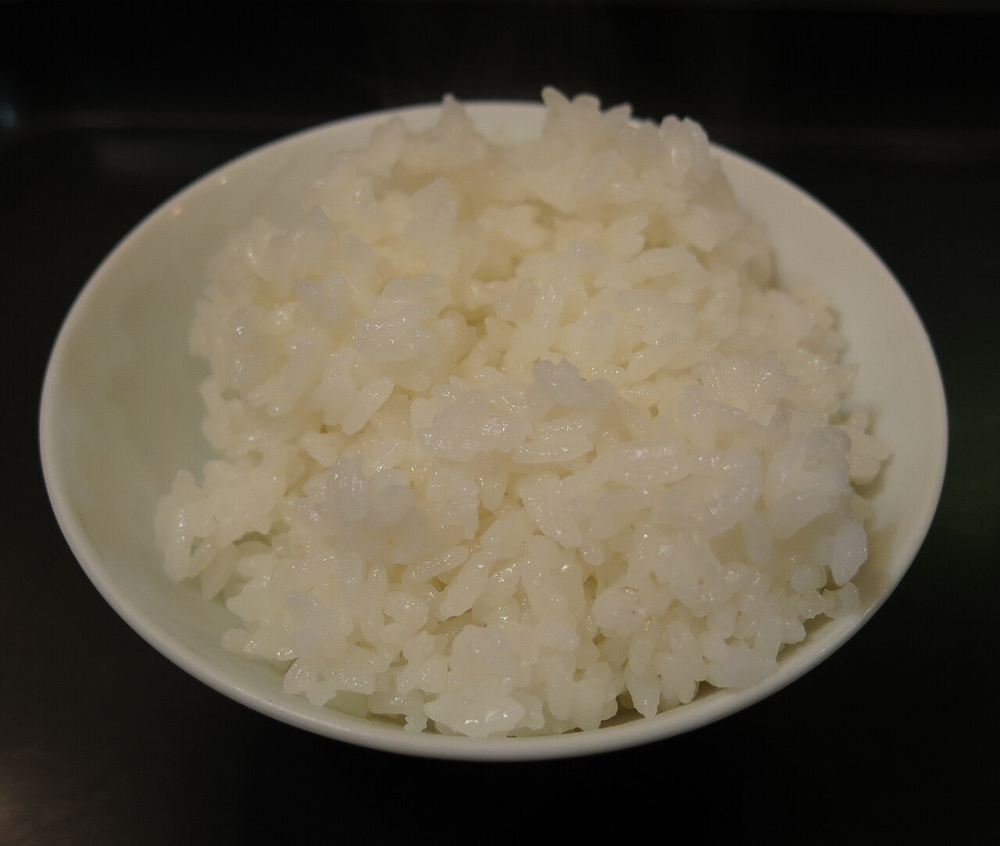

Fotografias ilustrativas — no site final usamos as vossas.
Comida para levar · Caldas das Taipas
Duas lojas, uma refeição para levar
Faça a encomenda à distância e recolha a sua refeição.
Duas lojas, para escolher a que lhe fica mais à mão.
Para o almoço de semana ou o jantar em família.
O Guloso Take Away tem duas lojas, uma em Caldelas (Caldas das Taipas) e outra em Guimarães. Escolha a refeição, encomende por WhatsApp e recolha.

Fotografias ilustrativas — no site final usamos as vossas.
Encomenda
Diga o que precisa e quando quer levantar (ou receber). Respondemos por WhatsApp.
↑ Assim chegaria a mensagem ao vosso WhatsApp. (Nesta demonstração nada é enviado.)
Onde estamos
Proposta para Guloso Take Away
Esta página foi feita de propósito para Guloso Take Away por João Machado, programador web aqui de Guimarães. Inclui:
Eu trato do alojamento e da manutenção. Sem compromisso.